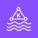

Internet users
Internet usersHTTPS
spread across ≥2 Availability Zones
HTTPS → BFF target group
per-service desired count · Service Connect · resource servers (JWT)
tasks balanced across ≥2 AZs
JDBC (RDS Proxy) · Kafka (TLS/IAM)

Amazon MSKmanaged Kafka (Serverless or provisioned)replicated across ≥2 AZs
▼ managed AWS services (regional) — identity, observability, registry, secrets
BFF login · services verify JWT · groups→roles
Managed Prometheusmetrics
Managed Grafanadashboards
Self-hosted → AWS-managed mapping
| Concern | Demo (self-hosted, EC2) | Production (AWS-managed) |
|---|---|---|
| Database | PostgreSQL on EC2 | Aurora PostgreSQL Multi-AZ + RDS Proxy; schema-per-service today, DB-per-service later. Creds in Secrets Manager (auto-rotation). |
| Event bus | Kafka (KRaft) on EC2 | Amazon MSK (Serverless or provisioned), TLS + IAM auth. |
| Identity / OAuth2 | Keycloak on EC2 | Amazon Cognito user pool — OIDC IdP; BFF is the OIDC client, services verify JWTs; roles via cognito:groups. |
| Observability | Tempo / Loki / Prometheus / Grafana (LGTM) on EC2 | X-Ray (traces, via ADOT) · Amazon Managed Prometheus (metrics) · CloudWatch Logs (logs) · Amazon Managed Grafana (dashboards over all three). |
| Compute | docker-compose on EC2 | ECS Fargate — per-service tasks, Service Connect, per-task IAM, autoscaling. |
| Edge / TLS | public IP, HTTP | ALB + ACM (HTTPS) + Route 53; optional CloudFront + WAF. |
| Egress / secrets | VPC endpoints, S3 env files | NAT Gateway (per AZ) + Secrets Manager. |
Code changes required
code source change dep dependency add cfg config / Terraform only
1. Role mapping: Keycloak realm roles → Cognito groups code
- Today
shared/…/security/KeycloakRealmRoleConverter.javareads roles from the Keycloakrealm_access.rolesJSON path and prefixesROLE_. Cognito puts group membership in a flat top-levelcognito:groupsarray instead. - Change: add a
CognitoGroupsRoleConverter(readcognito:groups→ROLE_*, keep the scope-claim authorities) and swap the one line inOAuth2ResourceServerSecurityConfig(jwt.jwtAuthenticationConverter(new …)). UpdateKeycloakRealmRoleConverterTest. ~1 class + 1 line + 1 test. Your@PreAuthorize("hasRole('…')")annotations are unchanged — map Cognito group names to the same role names.
2. BFF OIDC client + role read code cfg
erp-web-ui-bff/…/security/MeController.javareads roles from the OIDC user's claims — repoint fromrealm_accesstocognito:groups.erp-web-ui-bff/application.yml: replace thespring.security.oauth2.client.registration.keycloak+ provider with a Cognito registration (client-id/secret, issuer-uri = the user-pool issuer, scopesopenid,email,profile). Cognito's logout endpoint differs from Keycloak's, so add a logout success handler pointed at the Cognito/logoutURL. cfg + small code.
3. Kafka → MSK with IAM auth dep cfg
- Add the
software.amazon.msk:aws-msk-iam-authdependency and setspring.kafka.properties:security.protocol=SASL_SSL,sasl.mechanism=AWS_MSK_IAM, theIAMLoginModulejaas config +IAMClientCallbackHandler. The task role getskafka-cluster:*IAM permissions. The Spring Kafka producer/consumer code and the outbox/inbox/saga logic are unchanged — only bootstrap + auth config. (Plaintext today → SASL_SSL/IAM.)
4. Logging → CloudWatch code
shared/…/logback-spring.xmlhas aLOKIappender. On Fargate the container's stdout goes to CloudWatch via theawslogsdriver, so drop/gate the Loki appender and keep theCONSOLEappender (it already emitstraceId/spanId). Amazon Managed Grafana then queries CloudWatch Logs. Small logback edit.
5. Behind-ALB redirect URIs cfg
- The BFF builds OIDC redirect URIs from the request; behind the ALB add
server.forward-headers-strategy: frameworkso it honoursX-Forwarded-Proto/Hostand produces correcthttps://<domain>/login/oauth2/code/cognitoURIs (which must be registered as Cognito callback URLs).
Ready without code change (config / Terraform only)
- Database → Aurora/RDS —
spring.datasource.urlis env-driven (${SALES_DB_URL:…}) and the per-poolsearch_pathinit-SQL + schema-per-service design are unchanged. Point the URL at the Aurora/RDS-Proxy endpoint — zero code. (This is the project's load-bearing "DB-per-service is a config change" invariant paying off.) - Resource-server / OIDC-client wiring — Spring Security OAuth2 is fully config-driven via
issuer-uri/ client registration. Repointing the issuer to Cognito is config; only the role-claim converter (#1) and the BFF claim-read (#2) are code. - Traces → X-Ray — the Micrometer→OTLP exporter just needs
OTLP_ENDPOINTpointed at the ADOT collector (sidecar), which exports to X-Ray. No app code. - Metrics → AMP —
/actuator/prometheusalready exists and is anonymously scrapable; ADOT/AMP scrapes + remote-writes it. No app code. - Compute → Fargate — services are stateless and already containerized; the multi-instance-safe outbox (
FOR UPDATE SKIP LOCKED) and saga workers (claim-and-lease + per-instanceworkerId) make N replicas safe with no new coordination code. - Messaging app logic — outbox → MSK → inbox, partition-key/ordering, DLT, idempotency: all unchanged. Only Kafka bootstrap + auth config moves (#4).
- Secrets — DB password already injected via env/Secrets Manager (the original ECS task-secret path).
In short: the only genuine source changes are the Cognito group→role mapping (shared + BFF), the MSK IAM dependency/config, the Loki→CloudWatch logback tweak, and the forward-headers setting. Everything else — datasource, tracing, metrics, compute, messaging logic, secrets — is configuration or Terraform.